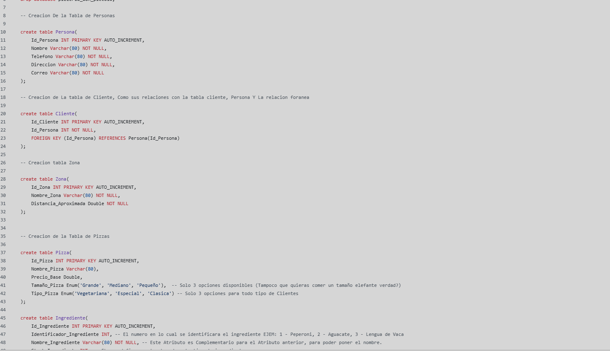
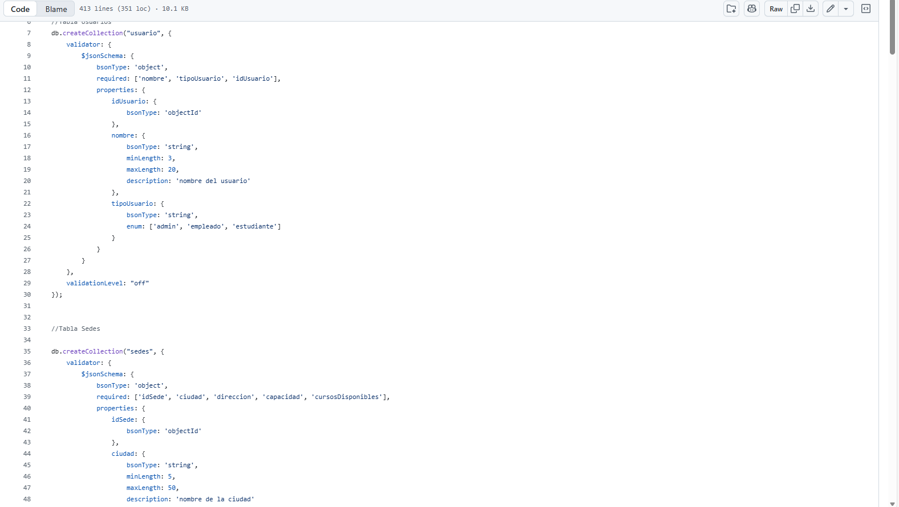
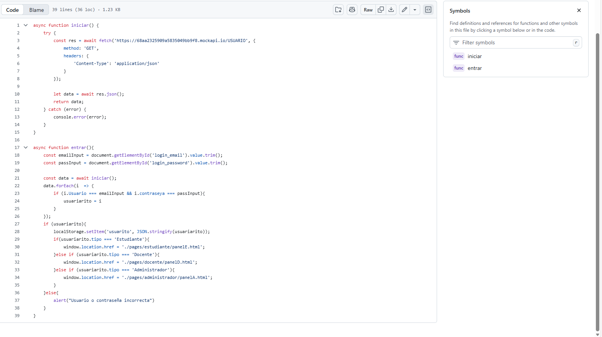
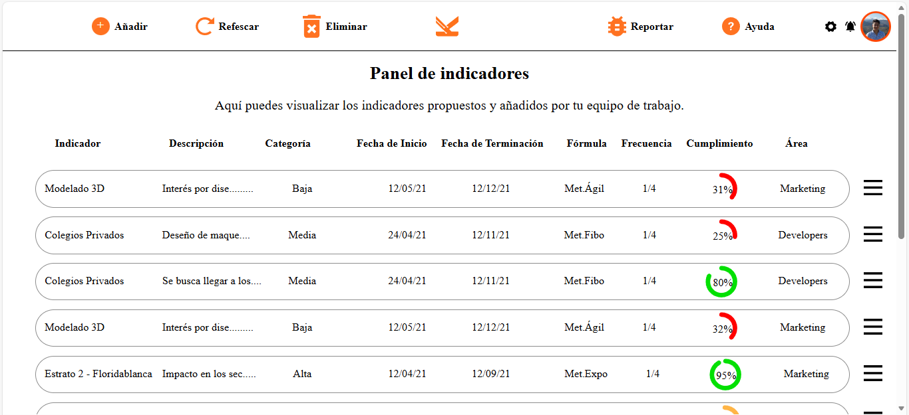
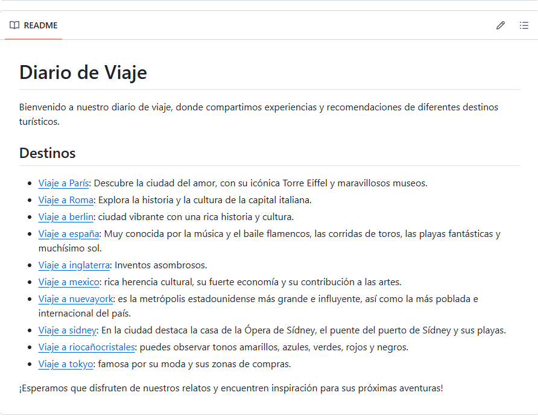
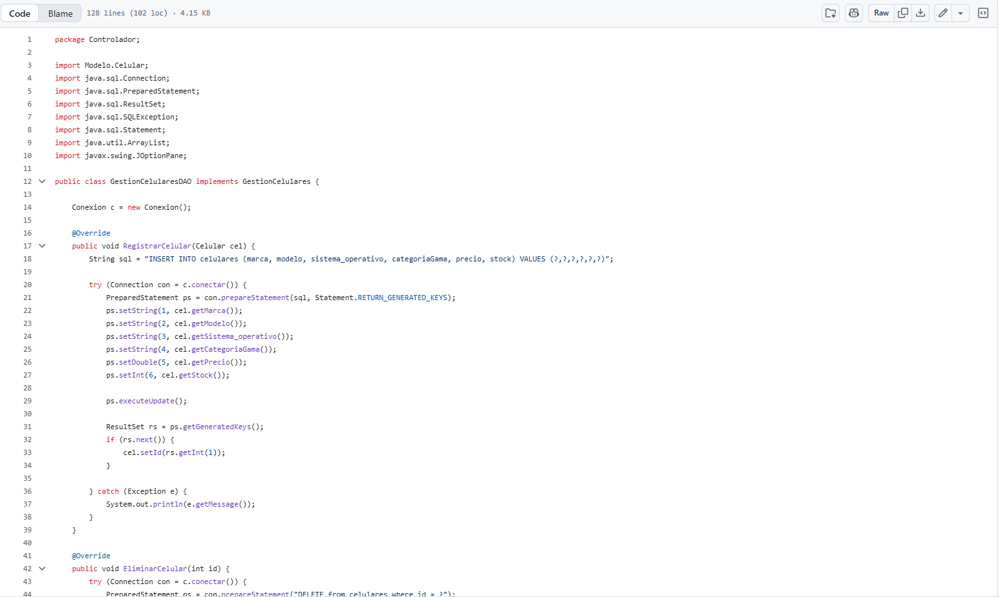

Pizzeria Don Piccolo
Base de datos diseñada para la gestión completa de una pizzería: registro de pizzas, ingredientes, clientes, zonas horarias y repartidores.
Ver en GitHub ↗Desarrollador en formación con enfoque en backend y bases de datos. Curioso por naturaleza, metódico por convicción. Construyo cosas que funcionan y que otro desarrollador puede entender.
Desarrollador de software junior en formación, con experiencia en creación de sitios web y bases de datos. Me adapto al cambio constante y busco siempre la mejor manera de expresar soluciones. Destaco por ver los problemas desde múltiples ángulos y comunicarme de forma clara y asertiva.
Domino varios lenguajes de programación, utilizo metodologías ágiles y las mejores prácticas en codificación. Valoro el trabajo en equipo y aporto valor a los proyectos combinando experiencia técnica con creatividad.

Base de datos diseñada para la gestión completa de una pizzería: registro de pizzas, ingredientes, clientes, zonas horarias y repartidores.
Ver en GitHub ↗
Base de datos para una escuela de música. Registro de estudiantes, instrumentos, cursos, cupos y distintos roles con sus propios permisos.
Ver en GitHub ↗
Plataforma escolar web construida con JavaScript puro. Cumple todos los requisitos de un LMS real, incluyendo consumo de APIs externas.
Ver en GitHub ↗
Página web de gestión de proyectos. Desarrollada mientras se aprendía HTML y CSS, con foco en el diseño de los requerimientos funcionales.
Ver en GitHub ↗
Diario de viaje colaborativo construido íntegramente con comandos Git. Registra experiencias y recomendaciones de destinos turísticos.
Ver en GitHub ↗
Sistema de consola en Java para automatizar la gestión de ventas, inventario y clientes de la empresa TecnoStore.
Ver en GitHub ↗
Sistema de SprigBoot en Java para lautomatizacion de consultas, guardados, editar, eliminar, inventario y productos de las bodegas de la empresa LogiTrack.
Ver en GitHub ↗